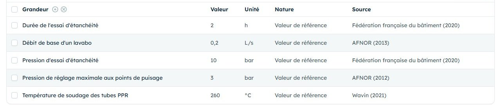
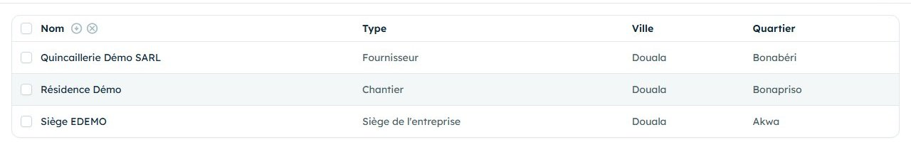
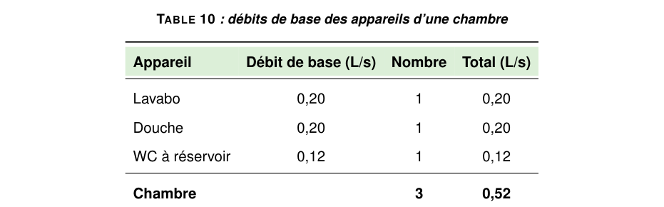

Cinquième samedi : les données du chapitre technique.
Le thème du rapport comporte un petit calcul. Aujourd'hui, vous recueillez ses données d'entrée, chacune mesurée ou sourcée, et vous complétez vos lieux.
Ce qui change aujourd'hui
Le cours demande un dimensionnement chiffré dans la Partie III. Le calcul se fera au moment de rédiger ; ses données, elles, ne se trouvent que sur place.
Le calculChoisi avec le formateur, adapté à votre thème.
Les donnéesChaque grandeur mesurée sur place ou lue dans une source.
Les lieuxSiège et chantier complets, pour le plan de situation.
Le déroulé de la journée
Moment
Dans l'application
Durée
Pendant la semaine
Choisir le calcul avec le formateur, dresser la liste des données (page 2).
20 min
En arrivant
Montrer la liste au tuteur : où trouver chaque donnée, avec quel appareil.
5 min
Chaque mesure
Note rapide : valeur, unité, appareil, endroit. Photo si utile.
1 min
Chaque valeur lue
Photo de la page de la notice ou de la norme.
1 min
Au siège ou au chantier
Une note rapide sur place, pour capter la position.
1 min
Le soir
Références, Données techniques, étiquette du chapitre, Lieux, Équipements.
45 min
À préparer pour samedi
Le calcul choisi et sa liste de données, remplie page 2.
Un mètre ruban, si l'entreprise n'en prête pas.
Le dossier terrain du samedi 4 relu : ses « Rien de saisi » en tête.
Carnet de stageAvant de partir
Avant de partir : choisir le calcul et lister ses données
Un petit calcul suffit : il montre que vous savez relier le terrain à la théorie. Choisissez-le avec le formateur, selon votre thème.
Exemples de calculs
Bilan thermique simplifié d'un local à climatiser.
Débit probable et diamètre d'une colonne d'eau.
Puissance frigorifique d'une chambre froide.
Les données d'entrée
Des dimensions : longueurs, surfaces, volumes.
Des conditions : températures, nombre d'occupants, d'appareils.
Des coefficients : lus dans une norme ou un ouvrage.
La formule
Elle vient d'un cours, d'une norme ou d'un ouvrage.
Notez le titre, l'auteur et l'année : elle sera citée.
Ma liste de données
Une ligne par donnée. La dernière colonne se coche samedi soir, une fois la donnée saisie dans le Carnet.
Donnée
Unité
Mesurée ou lue ? Où ?
Saisie
Calcul choisi :
Source de la formule :
Carnet de stageSur place
Sur place : mesurer, lire, situer
Une mesure complète
Quatre éléments, toujours : la valeur, l'unité, l'appareil, l'endroit.
« Local technique R+1 : longueur 5,20 m, largeur 3,85 m, au mètre ruban. »
Une valeur lue complète
La valeur, l'unité, et de quoi retrouver la source : photo de la page, ou titre, auteur et année.
Le rapport s'ouvre sur un plan de situation de l'entreprise, dessiné à partir des coordonnées du lieu de type Siège de l'entreprise. Il faut donc :
une note rapide prise au siège même, position captée ;
les repères pour s'y rendre : « face à la pharmacie… », « après le carrefour… » ;
la même chose pour le chantier, s'il est ailleurs.
Pas besoin d'y retourner exprès : profitez d'un passage au siège pendant le stage.
« Position captée » : les coordonnées sont enregistrées avec la note.
Pas d'estimation déguisée : une valeur estimée « à vue » ne remplace pas une mesure. Si vous ne pouvez pas mesurer, notez-le : le rapport le dira plutôt que d'inventer.
Carnet de stageLe soir
Le soir : chaque donnée à sa place
Même ordre que le samedi 2 : la source avant le chiffre, la note avant le relevé.
Références
La source de la formule et celle de chaque coefficient : norme, ouvrage, notice, ou la personne qui l'a donné.
Données techniques
Une ligne par donnée de votre liste : Relevé sur le terrain avec sa note, ou Valeur de référence avec sa source. Champ Rubrique : votre chapitre de dimensionnement.
Lieux
Siège : type Siège de l'entreprise, latitude et longitude recopiées depuis l'onglet Liens de la note prise sur place, repères, ville, quartier.
Équipements
Vérifier qu'il y a au moins un équipement dans chaque catégorie : outillage, matériel, EPI, appareils de mesure. Chacune donne un tableau du rapport.

Les valeurs de référence du compte de démonstration (filtre Nature) : chacune a sa source.

Les lieux de la démonstration : le siège donne le plan de situation du rapport.
Avant de dormir : compléter, trier, sauvegarder
Puis cochez la colonne Saisie de votre liste de données, page 2.
Notes à compléter : 0
Dernière sauvegarde : Aujourd'hui
Toutes les données de la liste saisies, ou leur absence notée.
Lieu de type siège avec coordonnées et repères.
Un équipement dans chaque catégorie.
Rubriques du cours remplies : au moins 14 / 20
Carnet de stageFormation
Formation : du Carnet au calcul du rapport
Cinq exercices en lecture seule sur le compte de démonstration : on suit une donnée depuis sa saisie jusqu'au tableau du rapport.
Adresseesrventisax.pythonanywhere.com
Identifiantdemo.apprenant
Mot de passedemo-local-2026
Filtrer les données techniques
À faire :Données techniques, bouton Filtres, nature Valeur de référence, puis Relevé sur le terrain.
Résultat attendu : 5 valeurs de référence, toutes avec une source ; 2 relevés.
Remonter à la source
À faire : trouver la source de « Débit de base d'un lavabo », puis l'ouvrir dans Références.
Résultat attendu : AFNOR, 2013 : la norme NF DTU 60.11 sur le calcul des installations de plomberie.
Retrouver la donnée dans le rapport
À faire : ouvrir le rapport de démonstration (lien sur l'accueil du Carnet) et chercher le tableau des débits de base.
Résultat attendu : le lavabo y figure à 0,20 L/s : la valeur saisie dans le Carnet, avec sa source.
Lire un lieu de type siège
À faire :Lieux, ouvrir « Siège EDEMO » : type, latitude, longitude, repères.
Résultat attendu : le repère « face au carrefour Exemple » se retrouve dans la Situation géographique du rapport de démonstration, à côté du plan de localisation.
Contrôler les catégories d'équipements
À faire :Équipements, filtrer par catégorie, une à une.
Résultat attendu : chacune des quatre catégories contient au moins un équipement.

L'exercice 3 dans le rapport de démonstration : la donnée du Carnet devient une ligne de tableau.Carnet de stageFormation
Une donnée d'entrée complète
Un calcul ne vaut que par ses données. Une donnée incomplète oblige à revenir sur place, et en stage du samedi, cela coûte une semaine.
Donnée à reprendre
« La pièce fait environ 20 m². »
« Environ » : une estimation.
Quelle pièce, mesurée comment ?
Donnée complète
« Bureau du chef de chantier : 5,20 m sur 3,85 m, au mètre ruban, le 5 décembre. »
Les mesures, pas le résultat seul : la surface se calculera.
L'endroit, l'appareil, la date.
Exercice : que manque-t-il ?
Pour chaque donnée, écrivez ce qui manque pour qu'elle soit utilisable.
Donnée notée
Ce qui manque
« Hauteur sous plafond : 2,80. »
« Le split fait 12 000. »
« Il fait chaud dans le local, au moins 35. »
« Coefficient pris dans le livre du formateur. »
« Six personnes dans le bureau. »
Pistes : l'unité et l'endroit ; l'unité et la source (plaque ou notice) ; une mesure avec un appareil, à une heure donnée ; le titre, l'auteur et l'année de l'ouvrage ; quel bureau, et si c'est une présence habituelle.
Vérifier ses acquis
Je sais quel calcul figurera dans mon chapitre technique, et d'où vient sa formule.
Je note une mesure avec sa valeur, son unité, l'appareil et l'endroit.
Je saisis la référence avant la valeur qu'elle justifie.
Mon siège est un lieu complet, avec coordonnées et repères.
Chaque catégorie d'équipements contient au moins un élément.